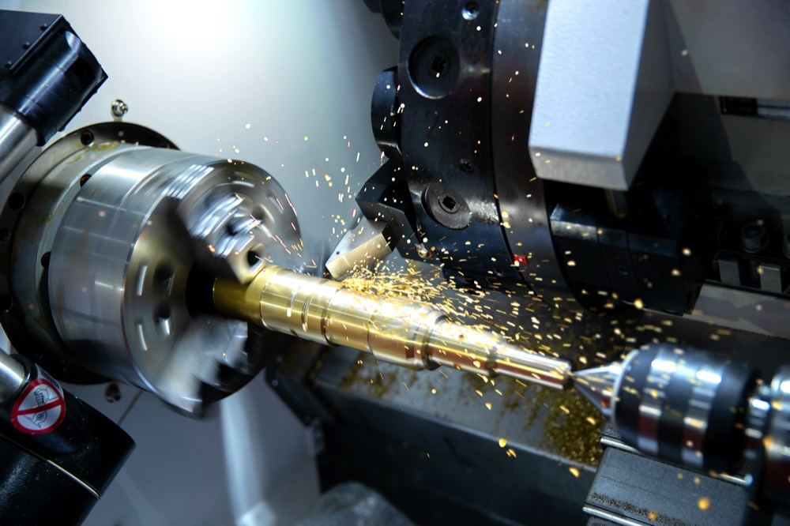

Titan Machining LLC delivers high-tolerance turning, milling and custom fabrication services to industrial, oil & gas, and manufacturing clients across the UAE. Fast turnaround. Uncompromising precision.

From single prototypes to high-volume production runs, our skilled machinists and modern equipment deliver precision components to exact specifications. Whether you need a one-off replacement part machined overnight or a recurring production batch for an ongoing project, our Ajman-based workshop is equipped to handle materials ranging from mild steel and stainless to brass, aluminum and engineering plastics. We work closely with engineers and procurement teams across the UAE to turn drawings, samples or rough specifications into finished, ready-to-install components — backed by careful quality checks at every stage of the process.
High-precision manual and CNC turning for shafts, bushings, flanges and custom cylindrical components in a wide range of materials.
Multi-axis CNC milling for complex geometries, tight tolerances and repeatable accuracy across small and large batch production.
Bespoke part design and fabrication support, from concept and prototyping through to finished, ready-to-install components.
Structural and precision welding services paired with full mechanical assembly for complete, ready-to-use assemblies.
Rigorous dimensional inspection and quality control on every job to ensure parts meet drawing specifications every time.
Efficient workshop scheduling and inventory of common materials allow us to deliver urgent jobs without compromising quality.

Based in Ajman, UAE, Titan Machining LLC specializes in lathe works and precision machining for clients in manufacturing, oil & gas, construction and general engineering. Our team combines traditional machining expertise with modern CNC technology to deliver parts that meet exact specifications, every time.
We understand that downtime is costly, which is why we prioritize clear communication and realistic timelines from the moment a drawing or sample part reaches our workshop. Every job, whether it's a single replacement component or a multi-piece production run, goes through the same disciplined process: material verification, precision machining, and a final dimensional check before it ships to you.
Tight tolerances on every component we machine.
Experienced machinists with industrial expertise.
On-time production schedules you can depend on.
Quality machining at fair, transparent rates.
Our machined components support critical operations across a wide range of UAE industries, where precision and reliability are non-negotiable.
Getting a part machined with Titan Machining LLC is a straightforward process, designed to minimize back-and-forth and keep your project on schedule.
Send us a drawing, sample part, or written specification along with your required quantity and timeline.
We review material options, tolerances and feasibility, then respond with a clear, competitive quote.
Once approved, your part moves into production on our lathe and CNC equipment with quality checks at each stage.
Finished parts are inspected against your specifications before being packaged and delivered on schedule.
We regularly work with mild steel, stainless steel, brass, aluminum, copper and a range of engineering plastics. If you have a specific material requirement, let us know and we'll confirm availability and machinability before quoting.
Yes. Many of our jobs are single replacement parts or small prototype runs. We're equally set up to scale into larger batch and production orders once a design is finalized.
Turnaround depends on part complexity, material availability and current workshop load, but we prioritize urgent breakdown and replacement part requests and will always give you a realistic timeline upfront.
A drawing helps us quote and machine more precisely, but it's not always required. We can also work from a physical sample part or detailed written specifications in many cases.
Our workshop is based on Amman Street in Ajman, United Arab Emirates, and we serve clients across Ajman, Dubai, Sharjah and the wider UAE.
Use the quote request form on our Contact page, or reach us directly by phone or email — our contact details are listed in the footer of every page.